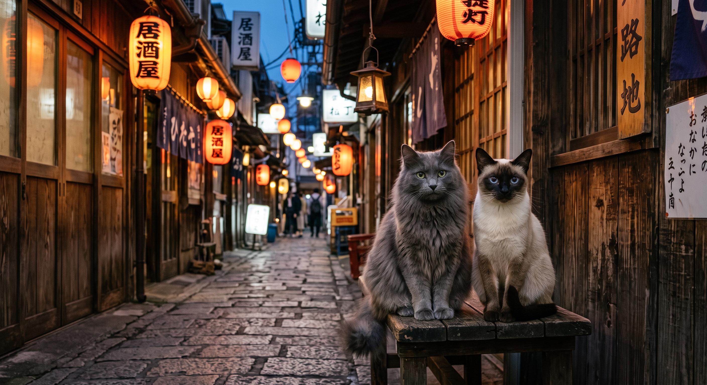
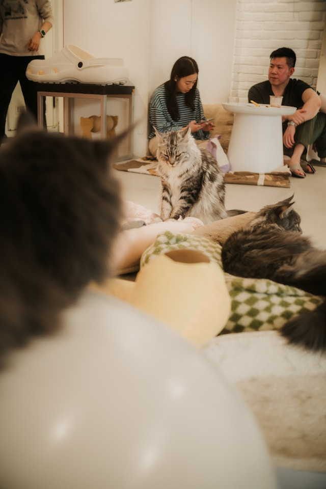
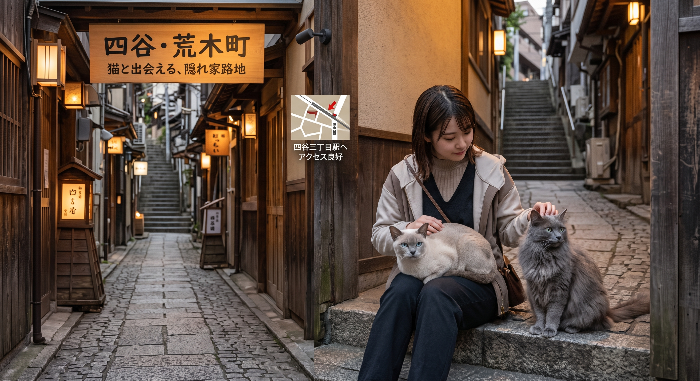

四谷・荒木町でトンキニーズ・ネベロングに
出会う・触れ合う方法
CONTACT PROTOCOL: HUMAN INSTRUMENTALITY PROJECT - CAT SECTOR
LOCATION DATA: YOTSUYA/ARAKI-CHO
レトロな雰囲気の四谷・荒木町周辺のスポットを散策してみる

石畳や風情ある路地が残る荒木町エリアには、隠れ家的なお店が点在しています。散策を楽しみながら、猫とゆかりのあるスポットや、運が良ければ看板猫に出会えるお店を見つけることができるかもしれません。
SEARCH (DATA)
訪れる前にチェック！お店や施設選びのポイント

特定の猫種に会いたい場合は、事前にSNSや公式ウェブサイトで在籍している猫ちゃんの情報をチェックしておくのがおすすめです。営業時間や予約の有無、写真撮影のルールなども合わせて確認しておきましょう。
RELAX (DATA)
お酒と食事を楽しみながら！ 猫と触れ合えるカフェへ

四谷周辺には、こだわりのコーヒーや食事を楽しみながら猫と触れ合えるコンセプトカフェもあります。トンキニーズやネベロングのような珍しい猫種に会える特別な空間で、至福の癒やし時間を過ごしてみてはいかがでしょうか。